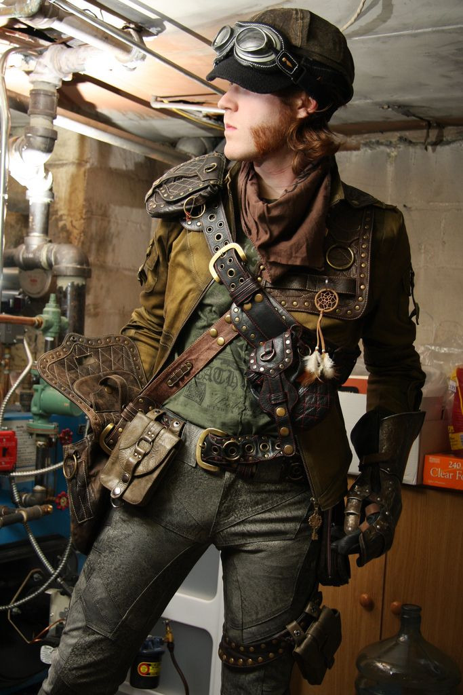
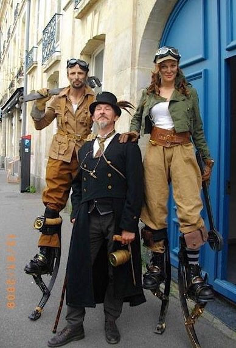

The Resurgence of Tekk Fashion (2005)
Once considered a relic of the Civil Centennial War, Tekk fashion is back on the streets. From riveted jackets to brass-trimmed goggles, the youth of 2005 are embracing the industrial glamour of the diesel age. With the rise of arcane circuits and magi-tech utilities, fashion now celebrates the union of soot and spell once again.
 In a world connected through the M.A.W., image and identity blur like steam on a visor. For many, wearing the mark of Tekk is not nostalgia—it is rebellion.